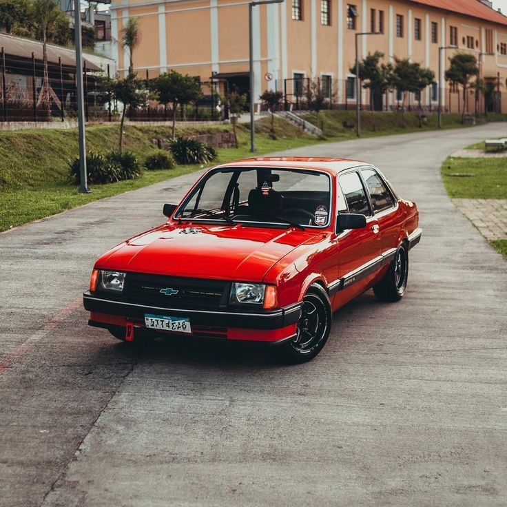

O Chevrolet Chevette foi um dos carros mais populares do Brasil durante as décadas de 1970, 1980 e 1990. Conhecido pela simplicidade, economia e facilidade de manutenção, ele conquistou milhares de motoristas e se tornou um dos modelos mais vendidos da Chevrolet no país. Hoje, o Chevette é lembrado com carinho por muitos brasileiros e também é valorizado por colecionadores. Seu papel na história da indústria automobilística nacional faz dele um verdadeiro clássico.
Voltar para a Página Inicial